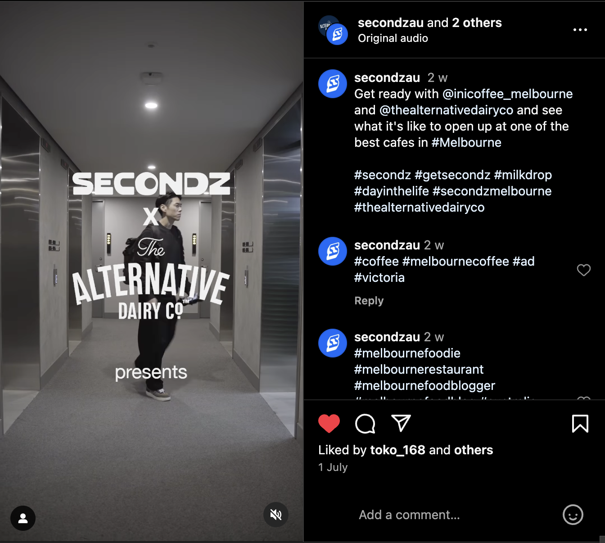

4th Day
Today I worked on the Scorpri Video for Secondz. Another part of the BYO Campaign with blackhearts and sparrows. This consistend of another editing brief and footage annotation. The editing briefs lets me creative freedom with how the video with turn out. Obviously since this series is for a client there was a design brief they pitched to them I had to follow and overall intention I had to stick to.
5th Day
Today I worked on the final video editing brief and footage oragnisation within the BYO series for pacific BBQ.
6th Day
Today I did the footage annotation for Burnside which is part of the Alternative Milk Campign secondz is doing. I also did the text graphic overlays for the Ini Coffee video and BYO with Lee Ho Fook. This was really fun to refine my illustratior and photoshop skills under professional requirements.